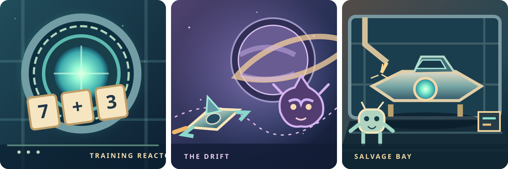

Visual field guide · 01A little cosmic wonder.
A little cosmic wonder.
A lot of mathematical clarity.
An illustrated, tactile universe with warm characters, recognisable equipment and crisp equations. The board stays the hero of gameplay.
Return to Mission Control ↗Three environments, one universe
These original SVG scenes are visual studies, not finished mode-card illustrations. They establish light, materials, shapes and atmosphere.

Space, energy and discovery
Deep space#071421
Painted hull#193747
Energy#8fe8d1
Progress#f4d49b
Drift#cbb6f5
Multiplayer#9ccafa
Hazards#f1acaf
Painted metal, friendly signals
Reactor online
A readable panel with gentle bevels and a high-contrast heading.
SYSTEM STABLEEnergy secured
Gold is reserved for a genuine next step, achievement or purchase.
Explore The Drift ↗Equation readable
8+4=12
Illustration frames the board; it never appears behind mathematical symbols.
Celebration with restraint
Animations reinforce what happened—energy rises, a module installs, a boss reveals itself. Navigation remains predictable, keyboard focus stays visible, and reduced-motion settings are honoured.
Read the visual identity guide